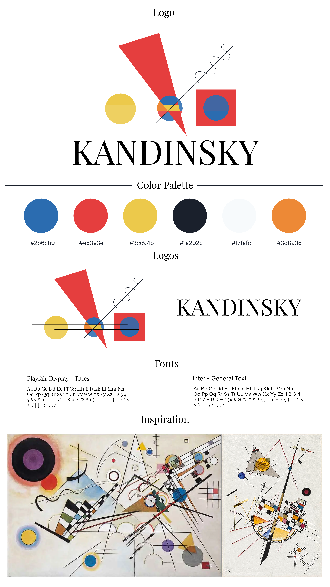

Project Type
Team Final Project
Collaborative N413 project developed with Arissa Green, focused on exploring Headless WordPress, React, and creative web design.
Headless WordPress · React · Creative Web Experience
A collaborative final project exploring how a headless WordPress architecture and a custom React frontend can support a more expressive, immersive, and visually dynamic website inspired by Wassily Kandinsky.
Collaborative N413 project developed with Arissa Green, focused on exploring Headless WordPress, React, and creative web design.
I focused on the visual direction, layout, usability, React frontend planning, homepage concept, experimental page, contact page, and interactive design ideas.
My work centered on the user-facing experience, while my teammate focused on the WordPress backend, custom post types, database structure, and REST API.
01 · Brand System
This brand system was inspired by Kandinsky’s abstract visual language, using geometric shapes, bold primary colors, movement, rhythm, and dynamic composition. The visual direction combines a gallery-like serif wordmark with abstract symbols, a strong color palette, and references from Kandinsky’s artwork.

02 · Project Overview
This project explored whether a headless WordPress architecture with a custom React frontend can expand the expressive and experiential possibilities of creative websites. Instead of relying on a traditional WordPress theme, the project used WordPress as a content management system and React as the custom visual layer.
The concept was inspired by Wassily Kandinsky’s abstract style, using geometric forms, strong colors, movement, and non-traditional composition to create a more artistic experience.
Problem
Traditional WordPress themes are efficient, but they often create rigid layouts that are difficult to customize for expressive, artistic, or non-linear digital experiences.
Goal
The goal was to test how React and headless WordPress could support a more dynamic creative website while still keeping the content manageable through WordPress.
03 · Architecture
WordPress was used to manage content such as artworks, images, text, metadata, and custom post types.
Content would be exposed through the WordPress REST API so the frontend could fetch structured data.
React handled the custom layouts, animation logic, routing, and interactive user interface.
Abstract shapes, movement, and dynamic composition were used to reflect Kandinsky’s visual language.
04 · Website Structure
A dynamic hero section with large “Kandinsky” typography and animated abstract elements.
A page introducing Kandinsky’s life, artistic style, philosophy, and visual identity.
A non-traditional gallery where artworks can be selected and opened in detail pages.
An interactive space where users can draw with shapes, lines, waves, colors, and an eraser tool.
05 · Design Direction
The visual system uses primary colors, geometric shapes, and movement to reference Kandinsky’s abstract compositions. At the same time, the interface remains structured with clear typography, purposeful spacing, and guided navigation so the creative direction does not make the website confusing.
06 · Reflection
This project helped me understand the trade-off between creative freedom and technical complexity. A headless architecture gives more control over layout, motion, and interaction, but it also requires more planning between frontend development, backend structure, and content management.
As a designer and frontend developer, this project pushed me to think about how code, content, and visual identity can work together to create a more expressive web experience.